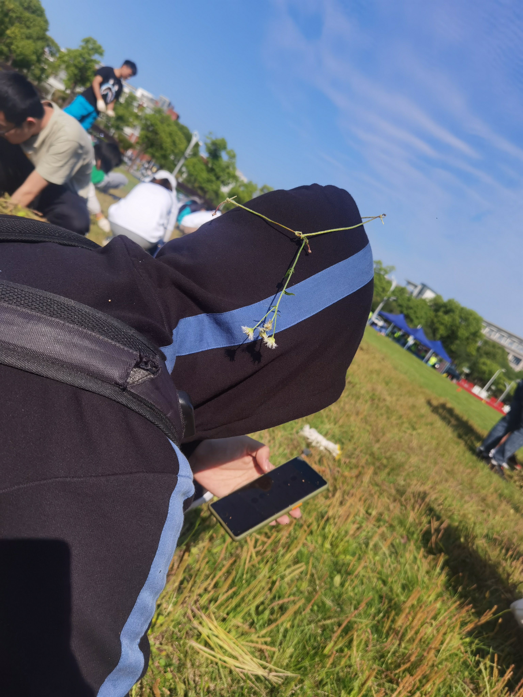
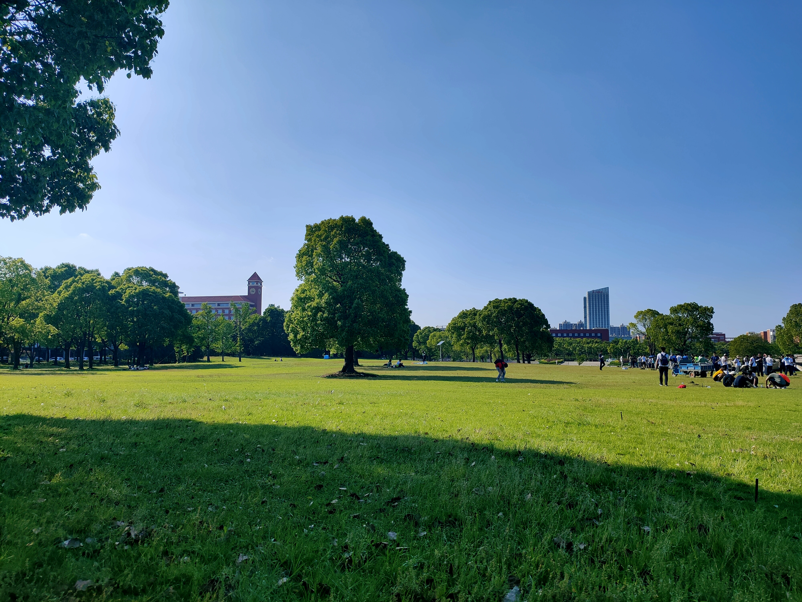
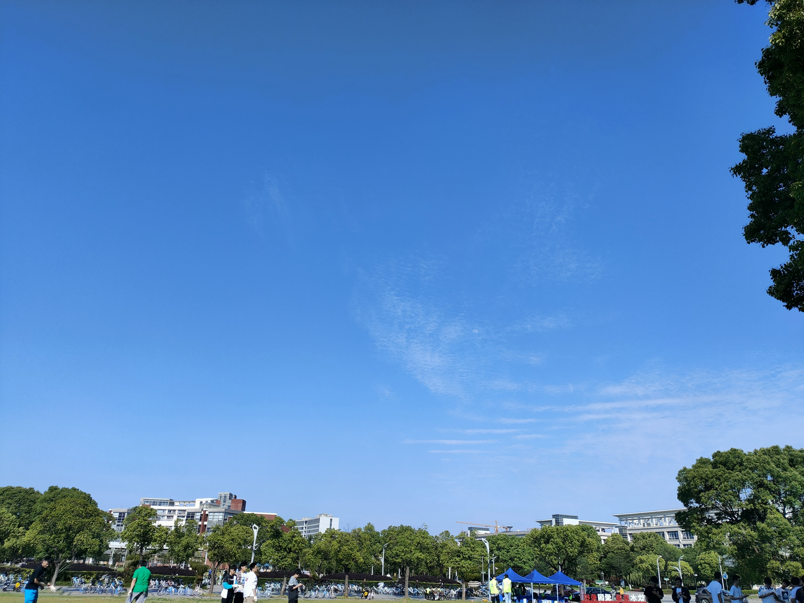

24_Blog
本文最后更新于：2023年1月5日 晚上
对近几天的一个小总结
写blog一般需要有灵感和动力，事实上昨天是有灵感的，但是没有动力，今天有动力了
似乎每次都是中午吃完午饭之后坐在固定的位置上写blog，写完就去午睡，哈哈
我觉得以后可能不用发空间什么的了，这个blog可能会涵盖大部分内容，只是初步的感觉，毕竟我的blog动辄上千字，比发空间的工作量还是大多了
有朋自远方来
这个周五就写了，当时写完之后觉得没什么好发的，现在修改一下发下来，哈哈，现在看我周四写的，发现很多东西都不记得了，我甚至以为我已经发过了
一位好友从新加坡回来，隔离了两个礼拜之后放出来了，周五来交大，聊了两个小时，主要还是周五太忙了。。除了周五和周一，我都挺有空的
啊，满感慨的，当年还是交大附小，快十年了，天哪，都过去这么久了，当时的同学现在也都没什么联系了，也就和他还有联系，颇为难得
上次见好像还是高考考完之后的一天，那天考完港中深的考试，在美罗城聊了聊
有一点遗憾吧，没能在交大相遇，但也没什么的，距离远近并不意味着什么
聊了一些东西，蛮有意思的
我挺羡慕南洋理工的吧，可能不像国内竞争压力这么大，我对这个大学生活是没有那么满意的
联想到近纲课上所说，这样一个环境可能让人觉得不是很舒服，唉。。
不得不说他在cs方面的造诣还是颇高，毕竟我算是半路出家，还差一些
聊了一些当下关于隐私，关于言论自由的话题，感觉还是有些难受吧，我也有一些思考，后面要继续思考
用过国外的一些软件之后再看国内的这些软件，无一例外，全是流氓，不想用，后面看情况，买个iphone吧，安卓的安全性、隐私等等东西很难让人满意，当然苹果做的也不会说尽善尽美，总归好一些
还有聊天平台的问题，我感觉是要研究一下了，事实上不是很高兴用qq或者微信，因为怎么说呢，现在可能算是《1984》中的世界了吧，手机无时无刻监控着我们的生活
可能有些偏执，哈哈，但我觉得还是要想一想，但是暂时不要钻进去
１０００ｍ
周六上午跑了一千，很开心，这学期的锻炼还是有效果的，一方面体重从高三到现在瘦了１０ｋｇ，另一方面，跑１０００ｍ的感觉和以前很不一样了，比以前还是强很多了，跑了３‘３３，８５分，我以前从来没有跑过这么快。但是我还是不太喜欢跑１０００，因为相对于５ｋｍ，１０ｋｍ，１０００ｍ还是无氧运动，我觉得对身体的负荷还是有一些大的，直到现在喉咙都有些不适
下学期目标３’１７，再瘦１０ｋｇ，我觉得是可以达到的，哈哈
拔草
啊，实际上就是摸鱼，我编了一个。。花圈？就当它是花圈吧



予见 六社联合音乐会
不得不说，每次在现场听音乐都是一个很。。。妙的体验
你可以感受到歌手的感情，看到歌手的表情、动作，而且整个人都在这样一个氛围之中，就很妙，很妙，每次都能够让我有一些感触，也可能是我听的比较少，但是很妙
下半场是一个音乐剧，关于“刺猬们”的故事
故事事实上总体不算很复杂，就是人们像刺猬一样，如果相互靠近取暖就会扎到对方，所以总是孤独，我不想写太多，表述的不好
总体上我感觉这个音乐剧挺不错的，勾起了我对音乐剧的向往
说向往可能不太合适，但是我非常愿意去画上三个小时，坐在剧院里，感受这样一场美妙的艺术
这部音乐剧其中的音乐、人物的冲突、情节在音乐中的展开、虚幻与现实、舞台与台下之间的交融都挺好的，我觉得音乐剧的核心在于将音乐与剧相结合，而不是单独地看音乐怎么样或者剧怎么样，更多地是要一种1+1>2的效果，这部剧就达到了
这部剧有两个医生作为龙套，他们也是这个剧的一部分——当我们盯着主角的时候，我们会忽视这些小人物，很多人都是孤独的。我很有感触，因为我真的几乎完全忽视掉了他们。。
之前高中的时候看过《Next To Normal》,《江姐》，明显感觉这部剧，虽然不如《Next To Normal》，毕竟是一个校园层面的音乐剧，各方面都有比较大的限制，但是要好于《江姐》。
《江姐》就是把一句本来可以说的话有了语调唱出来，让你感觉不到这个音乐剧的所谓音乐究竟有什么意思，不过是套了个音乐剧的外壳罢了，而且是在讲故事，没有办法很好的与我产生共鸣
另外两部还是很不错的，都是关于人的意志的，你可以看到想象和真实世界的交融，而且其中的音乐都很棒
暑假，或者大二上，要去剧院看音乐剧！
社会实践
我挺喜欢聊天的，很多时候聊天的过程中就是在帮助自己整理思路
今天聊了聊，我觉得解决了
我司考过了，社会实践有两个方向是我想去做的
见识不同的文化，不同的地域风情
体验不同的人的生活，体察不同的阶层、社会的不同角度
所以一共就这两个方向
先说第一个方向
这个或许可以算是旅游
但是我对于这样的旅游的想法和别人是不同的，可能的话，人数越少越好
怎么说呢，社会实践作为一个群体性活动，更多的时候我的想法和许多人不同，倘若真的让我去组织一个活动，我觉得最后的结果不会好于我暑假，寒假的两次出游，实际上那两次出游我有很大的收货，不详细展开了
第二个方向
就是去做一些调研，但是这个我不知道怎么去做，因为我完完全全地缺乏相关的经验，更多的需要一个比较大的层面，像是学院＼学校去组织，我自己做不了
所以暑假我可能不会去组织一场社会实践，我要看看有没有感兴趣的社会实践来加入，如果没有的话就延续我上个暑假＼这个寒假的计划，我可能今年去湖北或者河南？没有太想好
随记
挺不理想的，周四晚上四点钟才睡着，我都惊呆了，怎么可以这么晚。。
多种多样的原因吧，不管了
甚至周四还认识了一位华师大的同学，她生物专业，大一，交大表白墙上要买邢大本
我本来想着这书放在我这是招灰，不如给有需要的人，但是发现她并不需要，在我的劝说之下，她没有买书，哈哈，我把我自己的生意搅黄了
主要还是舍不得这几本化学书，唉，如果能物尽其用自然没有问题，但是卖出去在对方那也是放着，着实不理想
昨天看了《黑社会》，这部电影很不错，没有强调兄弟义气，更多地揭露了黑社会的黑，强调了对权利的争夺
还有一些感情方面的事情，比较玄学，哈哈
写了好长了，还有好多可以写，时间有限，我的天哪，太难受了，我的预期就是一个小时，已经写了一个小时了，再写下去就要超预期了，我应该把这几个每个分开写的，这样每个都能说的更详细一点，但是时间总是有限的，不尽兴
姑且如此，蛮遗憾的，唉。。。
本博客所有文章除特别声明外，均采用 CC BY-SA 4.0 协议 ，转载请注明出处！